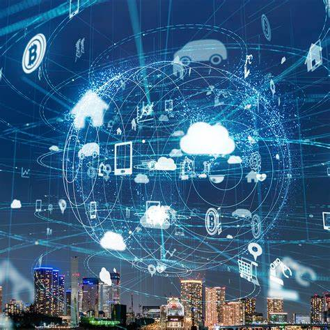

Internet of Things
The most important features of IoT include artificial intelligence, connectivity, sensors, active engagement, and small device use. A brief review of these features is given below• AI − IoT essentially makes virtually anything “smart”, meaning it enhances every aspect of life with the power of data collection, artificial intelligence algorithms, and networks. This can mean something as simple as enhancing your refrigerator and cabinets to detect when milk and your favorite cereal run low, and to then place an order with your preferred grocery.
• Connectivity:New enabling technologies for networking and specifically IoT networking, mean networks are no longer exclusively tied to major providers. Networks can exist on a much smaller and cheaper scale while still being practical. IoT creates these small networks between its system devices
• Sensors: IoT loses its distinction without sensors. They act as defining instruments that transform IoT from a standard passive network of devices into an active system capable of real-world integration.
• Active Engagement: Much of today's interaction with connected technology happens through passive engagement. IoT introduces a new paradigm for active content, product, or service engagement
• Small Devices: Devices, as predicted, have become smaller, cheaper, and more powerful over time. IoT exploits purpose-built small devices to deliver its precision, scalability, and versatility.
What is IoT?
The description of the Internet of Things is related to different definitions used by several groups for promoting the particular concept in the whole world.
➢ According to the Internet Architecture Board (IAB) definition, IoT is the networking of smart objects, meaning a huge number of devices intelligently communicating in the presence of internet protocol that cannot be directly operated by human beings but exist as components in buildings, vehicles or the environment.
➢ According to the Internet Engineering Task Force (IETF) organization’s definition, IoT is the networking of smart objects in which smart objects have some constraints such as limited bandwidth, power, and processing accessibility for achieving interoperability among smart objects.
➢ According to the IEEE Communications category magazine’s definition, IoT is a framework of all things that have a representation in the presence of the internet in such a way that new applications and services enable the interaction in the physical and virtual world in the form of Machine-to-Machine (M2M) communication in the cloud.
➢ According to the Oxford dictionary’s definition, IoT is the interaction of everyday object’s computing devices through the Internet that enables the sending and receiving of useful data. ➢ The term Internet of Things (IoT) according to the 2020 conceptual framework is expressed through a simple formula such as: IoT= Services+ Data+ Networks + Sensors
Generally, The Internet of Things (IoT) is the network of physical objects or "things" embedded with electronics, software, sensors, and network connectivity, which enables these objects to collect and exchange data. IoT is a system of interrelated computing devices, mechanical and digital machines, objects, animals or people that are provided with unique identifiers and the ability to transfer data over a network without requiring human-to-human or human-to-computer interaction. IoT is a network of devices that can sense, accumulate and transfer data over the internet without any human intervention.
Simply stated, the Internet of Things consists of any device with an on/off switch connected to the Internet. This includes almost anything you can think of, ranging from cellphones to building maintenance to the jet engine of an airplane. Medical devices, such as a heart monitor implant or a biochip transponder in a farm animal, can transfer data over a network and are members of the IoT. If it has an off/on the switch, then it can, theoretically, be part of the system. The IoT consists of a gigantic network of internet-connected “things” and devices. Ring, a doorbell that links to your smartphone, provides an excellent example of a recent addition to the Internet of Things.
Internet of Things- Advantages
The advantages of IoT span across every area of lifestyle and business. Here is a list of some of the advantages that IoT has to offer:
• Improved Customer Engagement: Current analytics suffer from blind-spots and significant flaws inaccuracy; and as noted, engagement remains passive. IoT completely transforms this to achieve richer and more effective engagement with audiences.
• Technology Optimization: The same technologies and data which improve the customer experience also improve device use, and aid in more potent improvements to technology. IoT unlocks a world of critical functional and field data.
• Reduced Waste: IoT makes areas of improvement clear. Current analytics give us superficial insight, but IoT provides real-world information leading to the more effective management of resources.
. • Enhanced Data Collection: Modern data collection suffers from its limitations and its design for passive use. IoT breaks it out of those spaces and places it exactly where humans really want to go to analyze our world. It allows an accurate picture of everything.
Intenet of Things-Disadvantages
Here is a list of some of the disadvantages of IoT. these are:
• As the number of connected devices increases and more information is shared between devices, the potential that a hacker could steal confidential information also increases.
• If there’s a bug in the system, it’s likely that every connected device will become corrupted. • Since there’s no international standard of compatibility for IoT, it’s difficult for devices from different manufacturers to communicate with each other.
• Enterprises may eventually have to deal with massive numbers maybe even millions of IoT devices and collecting and managing the data from all those devices will be challenging.
Challenges of IoT
Though IoT delivers an impressive set of advantages, it also presents a significant set of challenges. Here is a list of some its major issues:
• Security − IoT creates an ecosystem of constantly connected devices communicating over networks. The system offers little control despite any security measures. This leaves users exposed to various kinds of attackers.
• Privacy − The sophistication of IoT provides substantial personal data in extreme detail without the user's active participation.
• Complexity − Some find IoT systems complicated in terms of design, deployment, and maintenance given their use of multiple technologies and a large set of new enabling technologies
. • Flexibility − Many are concerned about the flexibility of an IoT system to integrate easily with another. They worry about finding themselves with several conflicting or locking systems
. • Compliance − IoT, like any other technology in the realm of business, must comply withregulations. Its complexity makes the issue of compliance seem incredibly challenging when many consider standard software compliance a battle.
HISTORY OF IOT
The Internet of Things has not been around for very long. However, there have been visions of machines communicating with one another since the early 1800s. Machines have been providing direct communications since the telegraph (the first landline) was developed in the 1830s and 1840s. Described as “wireless telegraphy,” the first radio voice transmission took place on June 3, 1900, providing another necessary component for developing the Internet of Things. The development of computers began in the 1950s.
The Internet, itself a significant component of the IoT, started out as part of DARPA (Defense Advanced Research Projects Agency) in 1962 and evolved into ARPANET in 1969. In the 1980s, commercial service providers began supporting public use of ARPANET, allowing it to evolve into our modern Internet. Global Positioning Satellites (GPS) became a reality in early 1993, with the Department of Defense providing a stable, highly functional system of 24 satellites. This was quickly followed by privately owned, commercial satellites being placed in orbit. Satellites and landlines provide basic communications for much of the IoT. One additional and important component in developing a functional IoT was IPV6’s remarkably intelligent decision to increase address space.
The Internet of Things, as a concept, wasn’t officially named until 1999. One of the first examples of an Internet of Things is from the early 1980s and was a Coca Cola machine, located at the Carnegie Melon University. Local programmers would connect by the Internet to the refrigerated appliance, and check to see if there was a drink available and if it was cold, before making the trip.
By the year 2013, the Internet of Things had evolved into a system using multiple technologies, ranging from the Internet to wireless communication and from micro-electromechanical systems (MEMS) to embedded systems. The traditional fields of automation (including the automation of buildings and homes), wireless sensor networks, GPS, control systems, and others, all support the IoT.
Kevin Ashton, the Executive Director of Auto-ID Labs at MIT, was the first to describe the Internet of Things, during his 1999 speech. Kevin Ashton stated that Radio Frequency Identification (RFID) was a prerequisite for the Internet of Things. He concluded if all devices were “tagged,” computers could manage, track, and inventory them. To some extent, the tagging of things has been achieved through technologies such as digital watermarking, barcodes, and QR codes. Inventory control is one of the more obvious advantages of the Internet of Things.
Watch YouTube Video